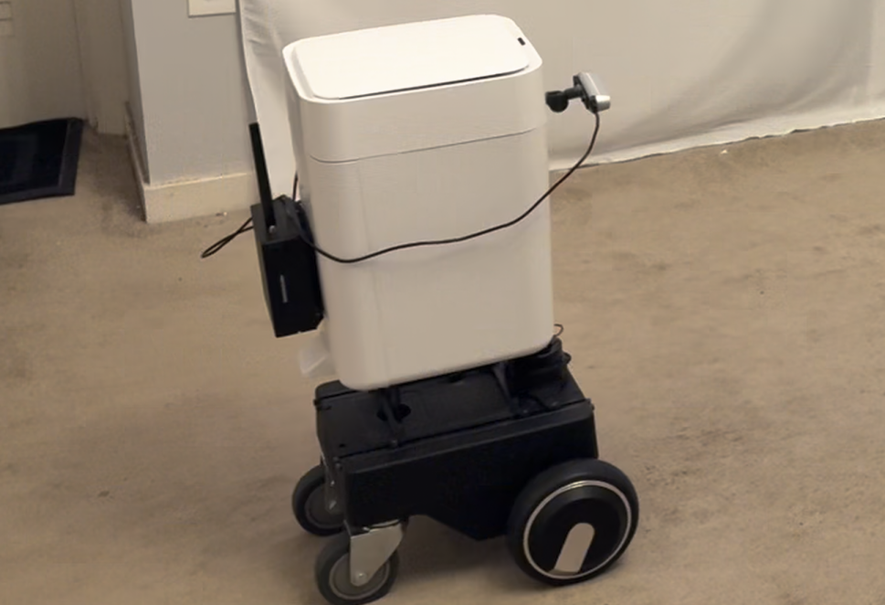
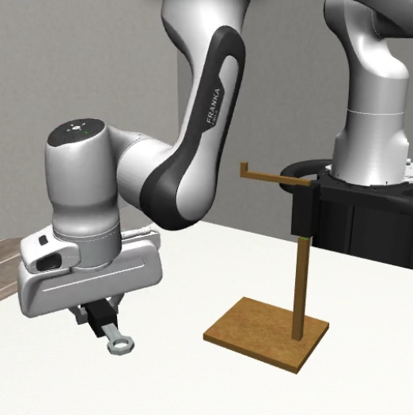
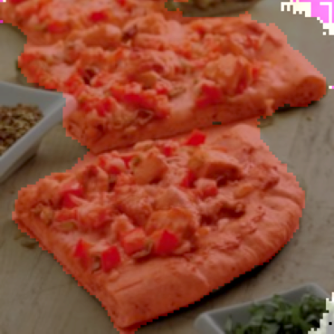
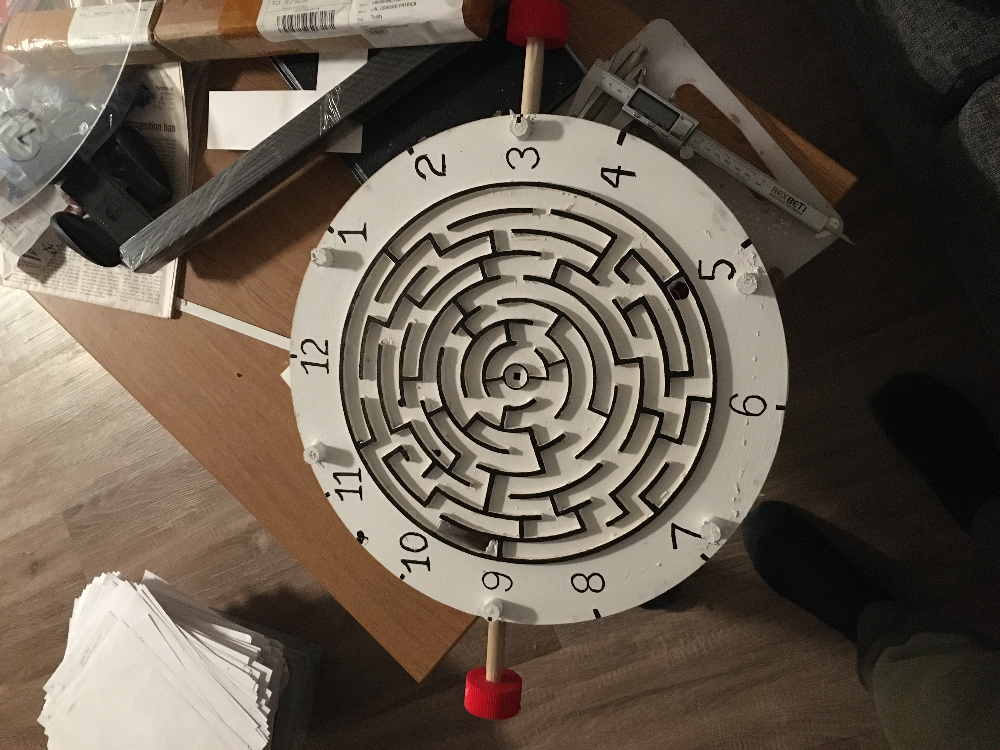

Mobile Trash Can Robot
Finished
Trash can robot that wanders around indoors and moves towards those who wave to it. Uses lidar, IMU, wheel encoders, jetson for hardware, and ROS2 (slam toolbox/nav2) + BlazePose for software.
Student @ Carnegie Mellon University

Trash can robot that wanders around indoors and moves towards those who wave to it. Uses lidar, IMU, wheel encoders, jetson for hardware, and ROS2 (slam toolbox/nav2) + BlazePose for software.

Just one time I went a little beyond the scope of the final project. Programmed a franka kinematic arm to draw any SVG path it is given on a whiteboard.

A gantry system that identifies recyclables on a conveyor and drops them into their respective bins. Combines vision, classification, and motion to sort recyclables automatically.

Offline robot manipulation project for 16‑831, exploring diffusion policies and flow matching on the RoboMimic benchmark. I implemented and trained the flow matching policy from human demonstrations, getting competitive performance across the RoboMimic benchmark tasks.

Running a semantic segmentation model on a Raspberry Pi to label each grocery items. Main focus was on squeezing a useful model into edge hardware limits.

Details the process of booth construction as well as the development of my first booth game.

A video game developed in Unity inspired by the classic offline Chrome dinosaur game. Players can jump in real life to jump obstacles. Link to game is included.

A multiplayer Sharknado‑themed booth game made in Unity controlled with Wiimotes. Players can shoot lightgun or swing chainsaw to fight off sharks attacking the school. Game is complete with animated sharks that move with motion-tracked footage of the school grounds.

Turning a novelty singing fish into a working home intercom (the mouth moves with the caller's voice). With custom mechanical design, PCB, software, and even latex casting, it's the most comprehensive personal project to date.

Wearable electric scooter concept that packs the drivetrain, batteries, and folding frame into a backpack. Still figuring out the packaging and safety details, but the goal is a last‑mile vehicle you can carry onto a bus or into class.

My honest attemp at making a Minecraft torch in the real world as accurately as possible. Base is made with stained/finished wood panels for a sleek look. Light has 8 programmable LEDs that look exactly like the game, uniformly lit such that it looks exactly like the game. Also has a battery pack for portability and pass-through charging for the wall mounted version.

Converted my Dad's office into one inspired by traditional Japanese room design. Raised the floor and added new flooring as well as a tatami mats. Added a new closet with a sliding shoji door. Installed a tokonoma (alcove) and used joinery (+ some modern hacks) to add sapele wood trim/supports.

A massive custom cabinet build to support my Mom's maker projects. Complete with custom cabinet doors, drawers, and shelves. Also built a custom desk to wrap around the unique curvature of the room and minimize wasted space.

A bonsai planter inspired by the pokemon Torterra. Made with a custom 3D printed shell and then sculpted with Monster Clay. My standards are larger than my artistic ability for this one, which makes it take longer than necessary.

Repair and restoration work on an accordion, replacing valves and adding springs.

Carved a high-walled DND dice tray out of walnut for my brother's birthday.